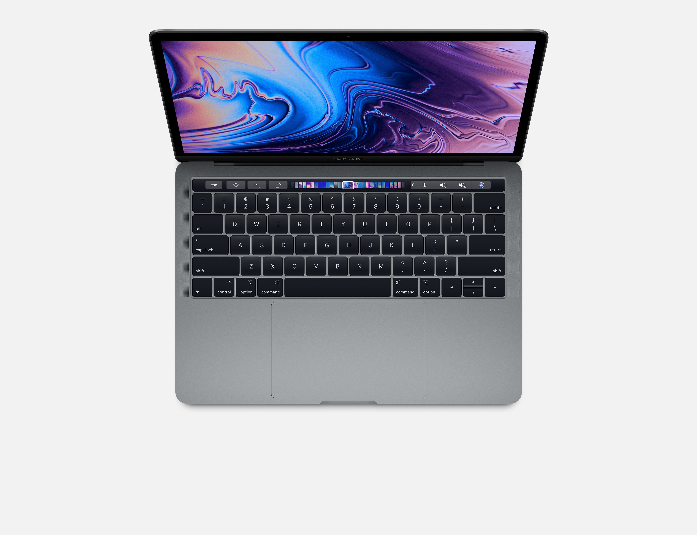

With great power
comes great capability.
Performance
MacBook Pro elevates the notebook to a whole new level of performance and portability. Wherever your ideas take you, you’ll get there faster than ever with high‑performance processors and memory, advanced graphics, blazing‑fast storage and more
— all in a compact package that weighs just 1.37 kilograms.
Processor
With an eighth-generation quad-core Intel processor, the 13‑inch MacBook Pro is ready to take on even the toughest tasks like compiling code, rendering 3D models, adding special effects, layering multiple tracks or encoding video, you’ll get
everything done.
Graphics
The 13-inch MacBook Pro features powerful integrated graphics with 128MB of embedded DRAM which accelerates graphics tasks. That means more time for what matters most: creating amazing work.
Touch Bar
On every MacBook Pro, the Touch Bar replaces the function keys that have long occupied the top of your keyboard with something much more versatile and capable. It changes automatically based on what you’re doing to show you relevant tools that
are intuitive to use.
Tap it. Hold it. Flick it. Slide it.
What you need. Where you need it.
The Touch Bar changes to match the app you’re using, bringing these shortcuts front and centre. And third-party apps can take advantage of the Touch Bar as well.
You can also create shortcuts directly in your Control Strip and in apps like Mail, Pages, Safari and Final Cut Pro X to help you work faster and be more productive.
Touch ID
With Touch ID, you can unlock your MacBook Pro in an instant. Quickly access system settings and locked notes. And even switch between users — all with the touch of a finger.
Apple T2 Security Chip
Provides the foundation for secure boot and encrypted storage capabilities. It also consolidates many discrete controllers, including the system management controller, audio controller and SSD controller, into one.
SSD Storage
The 13-inch MacBook Pro includes a solid-state drive that’s blazing fast, with sequential read speeds up to 3.2GB/s. It’s available with up to a 2TB SSD — enough space to take even your biggest files with you, like large photo libraries or
video projects.
Thunderbolt 3
Thunderbolt 3 combines ultra‑high bandwidth with the ultra‑versatility of the USB‑C industry standard to create one revved‑up universal port. It integrates data transfer, charging and video output in a single connector, delivering up to 40 Gbps
of throughput for twice the bandwidth of Thunderbolt 2. And Thunderbolt 3 is reversible, so no matter how you plug in, it’s always right side up.
Display and Audio
The Retina display on the 13-inch MacBook Pro features bright LED backlighting and a high contrast ratio, delivering deep blacks and bright whites. It supports P3 wide colour for even more vibrant greens and reds than with sRGB. And every
MacBook Pro features True Tone technology.
MacBook Pro has a dynamic soundstage that feels and sounds much wider than its physical dimensions imply. Movies are more immersive. Music more room-filling. And three built-in mics form directional beams that capture your voice more clearly
for FaceTime calls.
Keyboard and Trackpad
The 13-inch MacBook Pro keyboard has a butterfly mechanism — providing added key stability, comfort and a quiet typing experience. And the spacious Force Touch trackpad gives your fingers plenty of room to gesture and click.